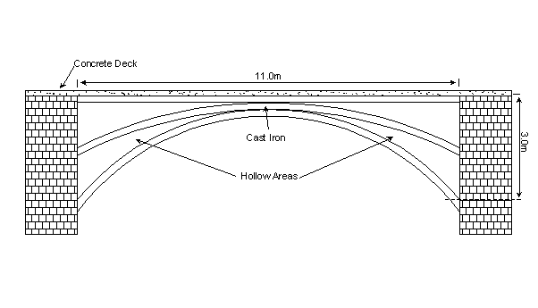

© Ellen Macinterney, University of Adelaide, 1999
This project involves the analysis of the Count Arbour Bridge, located in Shropshire, England. Initially, the finite element program PSTESS was used, however after some difficulty, it was replaced with Strand 7 for use in the analysis. The structure was simplified and material properties assumed, in order to obtain results of the stresses and displacements occurring in the structure.
The first part of the analysis involved moving two point loads, at four metre spacings, across the bridge, to simulate a moving vehicle. This enabled the load position that caused the maximum stress to be found. This occurred at load position 3, in which the left point load was 1.92m away from the left support.
The next part of the analysis involved increasing the point loads at load position 3 to find the deflection and the load in which first yield occurred. The deflections were very minimal ranging from approximately 3 to 12mm for total vehicular loads between 240 and 1040kN. However based on a yield stress of 200MPa, first yield, and hence the initiation of permanent damage to the structure, was predicted to occur for a total vehicular load of 800kN.
Possible remedial actions were suggested, including strengthening of the structure by bolting on plates or introducing a load limit to the bridge, preventing vehicles weighing greater than a certain weight from crossing the bridge.
This project involves the analysis of an existing structure – namely the Count Arbour Bridge, located in Shorpshire, England, shown in Figure 1-1. This bridge was constructed in 1797, from cast iron supported by stone buttresses. A simplified version of the structure was analysed using linear elastic, finite element analysis, assuming some applied loads, and material properties.
Since the bridge is still open to vehicular traffic, part of the analysis has involved moving a load across the bridge, to see the variation in stresses that moving loads may cause. For the position of greatest stress the vehicle load was increased, to find the maximum load the structure could withstand before failing. The effect the loads had on deflection was also investigated.
While it would be possible to theoretically analyse the structure and compare these results with the finite element analysis, this was thought to be difficult and time consuming. Rather the aim of the project was to see how the results varied, when the position or size of the load was altered, and ultimately determine the load at which the structure is likely to fail. Even if the results are not accurate, the variation of results, by varying loads should be relative.
The bridge consists of a cast iron structure, supporting a 150mm thick concrete deck slab that has been added at a later stage, so therefore does not act integrally with the iron, and acts only as a dead load.
The face arch of the cast iron structure consists of three ribs, 200mm in depth and 40mm in thickness, which are bolted together at the apex of the bridge. These ribs include a top horizontal one, and two smaller arches of different radii, as seen in Figure 2-1(a). Also at the apex is a plaque, which has "Cast at Coalbrookdale 1797" indented in it, indicating where the iron has come from and the year in which it was cast. Between the top horizontal rib and inner arch is iron plating of 20mm thickness. For simplicity in the analysis, the circular decorations (see Figure 2-1(b)) between the two outer arches have been ignored, as they are unlikely to contribute to the strength of the bridge.
The simplified structure, which has been used for analysis is shown in Figure 2-2. The total span of the bridge is 11.0 metres between buttresses. More details of dimensions are shown in the drawings in Appendix A. Dimensions were obtained from Foxcroft (2000).

The total width of the bridge is 4.3 metres. The arch of the iron structure, consisting of the three ribs as described above, is repeated three times across this width with 2.0 metre spacings. These can be seen in the plan view in Figure 2-3, or in the photo in Figure 2-4.
To simplify the analysis, all the iron components were assumed to be completely joined, even though many of the iron components were bolted together. Also since all of the three arches were identical, only the central arch was analysed, with proportions of the loads assumed to act on it.
There are several features of the bridge that are not incorporated in the analysis, however are worth a mention. These include the iron-plated underside of the bridge, which supports the concrete deck. This flat plating is supported by multiple bars, which span the width of the bridge, connecting the three arches. Also strengthening the bridge laterally are several tie bars that are jointed, not bolted, to the arches. Figure 2-5 (a) shows the plating of the underside and the supporting bars, with (b) showing the connection of the tie bar.
The entire assembly can be made out in a photo of the underside of the bridge (Figure 2-6), showing the three arches, the plating with the supporting bars and the tie bars.
Part of the project involved seeing how the results varied as loads were moved across the structure. As the structure is symmetric it would have been possible to analyse half of the structure if the loads were symmetric and stationary. However, since the loads were moving, the entire structure was used for the analysis, so that it can be seen how the stresses vary throughout the structure. This shape can be seen in Figure 2-2.
Initially the finite element program PSTRESS was used for the analysis, however several problems were encountered, as detailed in section 3.5, and no results were obtained from this program. The finite element program Strand 7 was then used successfully to obtain results of the stresses and deflections occurring in the structure. Strand 7 also produced graphical displays of the results, enabling an easier assessment.
As the bridge was built in 1797, it was difficult to know what properties the cast iron would have. However, based on the current day properties of cast iron (The Castings Development Centre, 1997), several properties were assumed. Young's Modulus, E, and Possion's Ratio, n , were taken as the current day values of 170,000MPa and 0.275, respectively. The mechanical properties of cast iron vary considerably, depending on the hardness of the iron. Generally the yield stress of the material, fy, ranges from around 350 to 900MPa at present times, however due to the age of the iron in this structure, a yield stress of 200MPa was assumed.
Other properties included the density of the concrete and iron, which were taken as 25kN/m3 and 71kN/m3, respectively. These properties were used to determine the dead weight of the structure.
For both PSTRESS and Strand 7, the two key properties required for input where Young's Modulus and Possion's Ratio. In Strand 7 the density of the steel was also input, so that a load did not have to be applied to account for the weight of the iron.
The loads acting on the structure include the dead load of the structure and the live, moving, vehicular load. Since the concrete is not connected to the iron structure, it is only assumed to act as a uniformly distributed load (UDL) on the iron arch. For the central arch that is to be analysed, the tributary area width of the concrete is 2.0 metres, as shown in Figure 2-3. Since the slab is 150mm thick, the UDL of the concrete was found to be 7.5kN/m. This was multiplied by the load combination factor of 1.25, to give a value of approximately 10kN/m. Using Strand 7, the weight of the iron was accounted for by inputting its density, however this was not possible in PSTRESS; therefore a UDL accounting for this weight was also introduced. This UDL for the iron was approximated as constant across the span, and the factored value was found to be 2kN/m. Load calculations are included in Appendix B.
The total dead load acting on the structure, in the PSTRESS analysis was 12kN/m. Due to the limitations of this program it was not possible to apply a UDL to the element, therefore it was necessary to use the consistent load method, to find equivalent point loads that acted on the nodes (see Appendix B). It was found that loads of 1600N and 800N should act on the mid-side notes and corner nodes, respectively.
Unlike PSTRESS, in Strand 7 it is possible to apply pressures on elements. For the loading situation described above, it was necessary to apply edge pressures, which acted on the top edge of the elements. The Edge pressure was found by dividing the UDL of 10kN/m by the thickness of the element, 40mm, giving a pressure of 0.25N/mm2.
The live load acting on the structure was based on a standard fatigue vehicle that consisting of two, 120kN point loads located four metres apart. These loads were applied at nodes and so an exact spacing of four metres could not be obtained since it depended on the spacing of the nodes.
Two stone buttresses on either side support the cast iron structure, with the concrete slab deck lying on top of both. As can be seen in Figure 3-1, the lower arches are jointed to a horizontal plate, which lies on a stone ledge. These joints have been assumed to be completely restrained.
The upper arch also rests on a plate, as seen in Figure 3-2, which rests on a chamfer cut in the stonework at an angle. Again this support was assumed completely restrained.
It is uncertain how the bridge is supported above the upper arch since this in enclosed by iron plating. Therefore, for the edge above the upper arch, it has been assumed that the entire edge is fully restrained.
For the input using PSTRESS, restraints were only possible at nodes, therefore at each edge node, both the X and Y degrees of freedom were restrained. In Strand 7 it is possible to have edge restraints for elements, however this was not realised until after the analysis, therefore the translational and rotational restraints in all directions were fixed for the nodes along the support edge.
The programming in both PSTRESS and Strand 7 is similar in that it requires similar input. The material assignment and properties, the load cases and the restraint conditions all need to be entered. They both also involve subdividing the structure into elements, which is a key feature of a finite element analysis. The main difference is that in PSTRESS the node and element locations are input using a text file, whereas in Strand 7, a visual format is used which shows the location of the nodes and elements as you are inputting them.
In creating the models for both programs attempts were made to keep the aspect ratio of the elements close to one and the angles within the elements close to 90o, to give the best accuracy of results.
The PSTRESS model that was created consisted of 283, eight nodded, rectangular elements and 1086 nodes. For each of these nodes and elements, nodal coordinates and element incidences were manually entered or generated via the input file. A diagram of the model showing the location of elements, and the input file are included in Appendix C. Part of the output file was generated, up until and including the nodal point loads, before the execution of the program was terminated, displaying the error:
NEGATIVE OR ZERO DETERMINENT
ELEMENT 2 DETERMINENT –0.216E+04
1 ILLCONDITIONING OR GEOMETRY OR DEFINITION ERRORS
EXECUTION TERMINATED
Attempts were made to correct the error, without any success. Therefore, an option of creating a new input file for a coarser mesh was considered to remove the error. However considering the time required in creating the initial mesh, this was not considered a feasible option, as it did not guarantee a solution. Therefore it was decided to change to the finite element program Strand 7.
The model created in Strand 7 consisted of 226 plates and 620 nodes. The benefit of Strand 7 was that both rectangular and triangular shaped elements could be used to best represent to structure. The model created in Strand 7 is included in Appendix D.
As can be seen in the model diagram (Appendix D), two small areas, between elements 89 and 73, and between elements 94 and 74, were removed from the mesh. This was because the small angles in these areas were causing errors to occur. No effect of removing these areas could be seen in the results.
Another significant feature of the mesh were the four transition points, which reduced the number of elements running in the vertical direction in some areas. The main problem of these was that they caused irregularities in the stress distribution. However, since no maximum, or near maximum stresses occurred near these transition points, it was assumed that these irregularities would not interfere with the results of the maximum stresses, which were of most interest.
It was necessary to checking the results of the analysis to ensure that no errors had been made during input. This was done by reviewing the Results Log File, included in Appendix D. From this file, the summation of the applied loads acting on the nodes and plates, were checked to ensure they equated to the applied loads. The displacements and stresses were also checked to make sure they were of the correct order of magnitude.
The first part of the analysis involved moving the position of the two, 120kN point loads, to see how the stresses in the structure varied, and determine which load position caused the maximum stress. Nine load cases were considered, as shown in Appendix E. As point loads are applied at nodes in Stand 7, it was not possible to have and exact axle spacing of four metres, instead a spacing of 3.842m was used, which corresponded to a multiple of element widths.
Stress plots of the structure for each loading position are included in Appendix E. It can be seen in these plots, how the positions of maximum stress change as the load moves across the structure, however in general the tensile and compression areas remain in the same regions of the structure. Table 4-1 shows the maximum tensile stress for each load position. From these values it can be seen that load positions 3 and 7 equally produce the greatest tensile stress
|
Load position
|
Maximum Tensile Stress (MPa)
|
|
1
|
36.55
|
|
2
|
50.59
|
|
3
|
51.06
|
|
4
|
42.66
|
|
5
|
34.77
|
|
6
|
42.67
|
|
7
|
51.03
|
|
8
|
50.62
|
|
9
|
36.59
|
The second part of the analysis involved increasing the value of the point loads to see the effects on the maximum deflection and stresses, to determine the load at which the structure is likely to fail. Load position 3 was chosen for this further analysis since it was the position of maximum stress. Table 4-2 summarises the results for the varying loads. In this table the total vehicular load is equal to the sum of the two point loads acting at a 3.842m spacing. The column adjacent to this is the proportion of this vehicular load in terms of the standard fatigue vehicle (SFV). Also included in this table is the maximum tensile and compressive stresses, and the maximum deflection. The final column, the deflection ratio has been derived by dividing the maximum deflection by the span length of 11,000mm, giving the amount of deflection per millimetre span length. This deflection ratio is useful for comparing values of allowable deflections given in standards.
| Total Vehicular Load (kN) | Proportion of SFV | Max Tensile Stress (MPa) | Max Comp. Stress (Mpa) | Max Deflection (mm) | Deflection Ratio |
| 240 (SFV) | 1.00 | 51.06 | 67.06 | 3.41 | 1/3326 |
| 360 | 1.50 | 73.88 | 95.89 | 4.73 | 1/2326 |
| 400 | 1.67 | 81.48 | 105.5 | 5.17 | 1/2128 |
| 440 | 1.83 | 89.09 | 115.1 | 5.61 | 1/1961 |
| 480 | 2.00 | 96.69 | 124.7 | 6.05 | 1/1818 |
| 500 | 2.08 | 100.5 | 129.5 | 2.27 | 1/1743 |
| 520 | 2.17 | 104.3 | 134.3 | 6.49 | 1/1695 |
| 560 | 2.33 | 111.9 | 144.3 | 6.92 | 1/1590 |
| 600 | 2.50 | 119.5 | 153.3 | 7.36 | 1/1495 |
| 700 | 2.92 | 138.5 | 177.6 | 8.46 | 1/1300 |
| 800 | 3.33 | 157.5 | 201.6 | 9.56 | 1/1151 |
| 900 | 3.75 | 176.5 | 225.7 | 10.65 | 1/1033 |
| 1000 | 4.17 | 195.6 | 249.7 | 11.75 | 1/936 |
| 1040 | 4.33 | 203.2 | 259.3 | 12.19 | 1/902 |
As linear elastic analysis was used in Strand 7, the results that have been produced for the stress and deflection increase linearly with the increase in load. It can be seen in the above results, that the compressive stress is greater than the tensile stress for all load values. Assuming that the material can yield equally in compression and tension, first yield in compression occurs at a load of 800kN (3.33 x SFV), based on a yield stress of 200MPa. If yielding of the material only occurs in tension, then the first yield, and hence initiation of failure occurs at a load of 1040kN (4.33 x SFV). Therefore, 800kN is taken as the lower bound load in which failure begins to occur.
A plot of the stresses for a total vehicular load of 500kN, acting at load position 3, is shown in Appendix F. This shows that the position of the maximum stresses occur close to the centre of the arch.
At this first yield, the structure will not completely fail, however permanent deformations will begin to occur at this point. Therefore, damage to the structure is assumed to occur at a vehicular load of 800kN. It should be noted that this analysis has not taken into account the effects which fatigue may have had on this structure, although fatigue would most certainly cause some damage.
This failure point has not taken into account the buckling of the structure, which is likely to occur when part of the structure is in compression. However as shown in Figure 2-5(a) and (b), the structure has considerable bracing with the supporting bars and tie bars, so these are assumed to prevent buckling failure.
The values of deflection seen in Table 4-2, indicate that deflection is not of great concern. By comparing the deflection ratios with allowable ratios, which vary from 1/250 to 1/400, it can be seen that the deflections in the structure are well with in allowable limits, so therefore deflection will not cause failure. The deflected shape of the structure, for load position 3 has been included in Appendix G.
In conclusion, based on all assumptions made, vehicular loads of greater than 3.33 times the standard fatigue vehicle (800kN) will damage the structure. If loads of these magnitudes are crossing the bridge at present, remedial actions are required.
Remedial actions such as bolting plates to the structure at positions of high stress could be used to strengthen the bridge, so that loads greater to 3.33 times the SFV could cross the bridge without causing any damage. Already, cracks in the iron arches have been repaired by bolting plates onto the structure, as can be seen in Figure 5-1. However these types of actions may affect the aesthetics and heritage of the bridge.
The other option is to introduce a load limit on the bridge, by erecting signs that prevent vehicles greater than a certain weight from crossing the bridge. Since the bridge does not form part a major road, this seems like the best option.